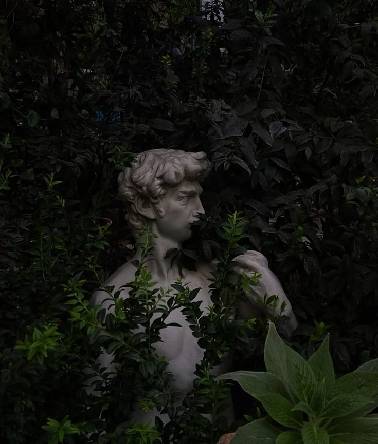
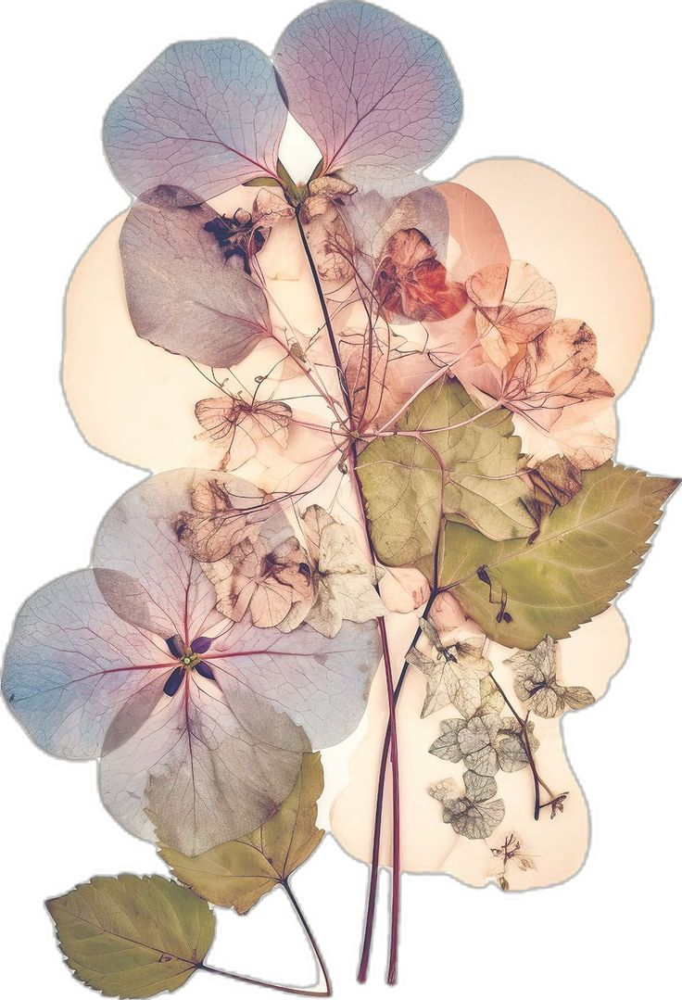

"What separates myths from reality? What separates man from monster? What separates you from me?"

My name is Gianmaria Romano, and I am a third-year undergraduate student at Sapienza Università di Roma, currently pursuing a Bachelor's Degree in Applied Computer Science and Artificial Intelligence.

カムチャッカの若者が きりんの夢を見ているとき メキシコの娘は 朝もやの中でバスを待っている ニューヨークの少女が ほほえみながら寝がえりをうつとき ローマの少年は 柱頭を染める朝陽にウインクする この地球では いつもどこかで朝がはじまっている ぼくらは朝をリレーするのだ 経度から経度へと そうしていわば交替で地球を守る 眠る前のひととき耳をすますと どこか遠くで目覚まし時計のベルが鳴ってる それはあなたの送った朝を 誰かがしっかりと受けとめた証拠なのだ